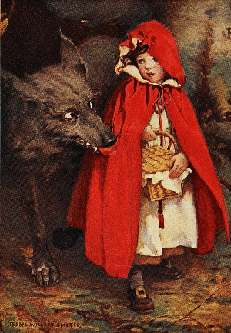

Борис Акунин
Мой календарь
Вчера был день решительности, а сегодня, наоборот, день осторожности. Не всякие Рубиконы нужно переходить, особенно не зная брода. И не всегда.
Поэтому сегодня лучше восьмой раз отмерьте, прежде чем отрезать. Иначе можете, как Красная Шапочка, оказаться в пищевом тракте Серого Волка.
Знаменитая сказка Шарля Перро была впервые напечатана именно в этот день, в 1697 году.
Предназначалась сказка не для маленьких девочек, а для половозрелых девиц - предостерегала их, чтоб не доверяли сладким речам соблазнителей, кем бы те ни прикидывались.
В финале, который назывался «моралитэ», об этом прямым текстом и говорилось:
Эта рекомендация полезна не только для баловниц, но для всех и каждого. Идешь с пирожками через лес - гляди в оба. А лучше вообще не ходи. Во всяком случае 11 января.